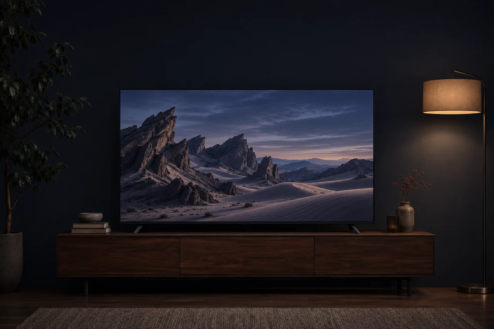

Your personal media library
Your files.
Your TV.
Pick videos and music from your Windows folders. Play them in a browser on your TV, phone, or computer over your home network.

From folder to playback
Full setup guide-
Open Didanihaa
Extract the ZIP to a writable folder and open
Didanihaa.exe. The dashboard opens in your default browser. -
Build your library
Add a folder in the dashboard. After the scan, publish the files you want to play. Each folder becomes a playlist.
-
Watch on your TV
Connect the TV to the same network. In its browser, open your PC’s address on the default port
13521. Pick a folder or a file to play.
Common questions
What do I need to get started?
The portable package targets Windows x64 and includes its .NET runtime. To play on another device, connect both devices to the same local network. If the firewall blocks access, see the setup guide.
Where do my files stay?
Files stay in their original Windows folders. Didanihaa plays your selected files directly over the local network, with no cloud account required. Use the dashboard on a trusted network.
What if my TV cannot play a file?
Didanihaa streams the original file, so playback depends on the device's codecs and browser. Try the simple TV view for older browsers. FFprobe and FFmpeg can add extended metadata and video thumbnails.